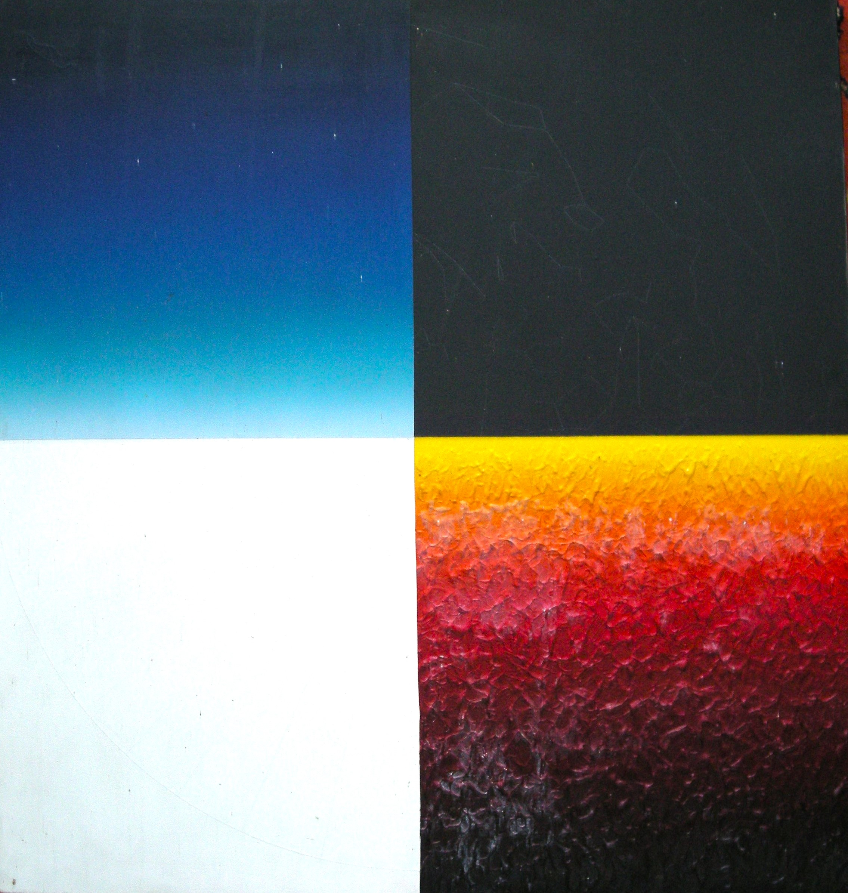

Peter Kalkhof
1933 – 2014
Artist Biography
Peter Kalkhof studied at the School of Arts and Crafts, Braunschweig and then the Academy of Fine Arts, Stuttgart. In the early 1960s he then extended his studies at the Slade School of Fine Art in London and Ecole des Beaux-Arts, Paris. Kalkhof moved from a classical modernist training towards more abstract thinking, what he called ‘Colour and Space’. This essentially was a mix of hard geometry – lines, circles and squares – with bold primary blocks of colour. Kalkhof insisted that for all the apparent abstraction his art remained based upon real world observation, but also references more primal cultures. Kalkhof was given a first solo show at Annely Juda, London in 1970 and he remained represented by the gallery throughout his life, receiving ten solo shows over five decades. A number of German galleries also exhibited his work, notably in Stuttgart, Karlsruhe and Dusseldorf. Public collections holding Kalkhof’s work include the Arts Council of Great Britain, Contemporary Art Society, Reading Museum and Art Gallery, Landesmuseum Oldenburg in Germany and the European Parliament in Strasbourg.

Colour and Space Opp Constellation, 1976